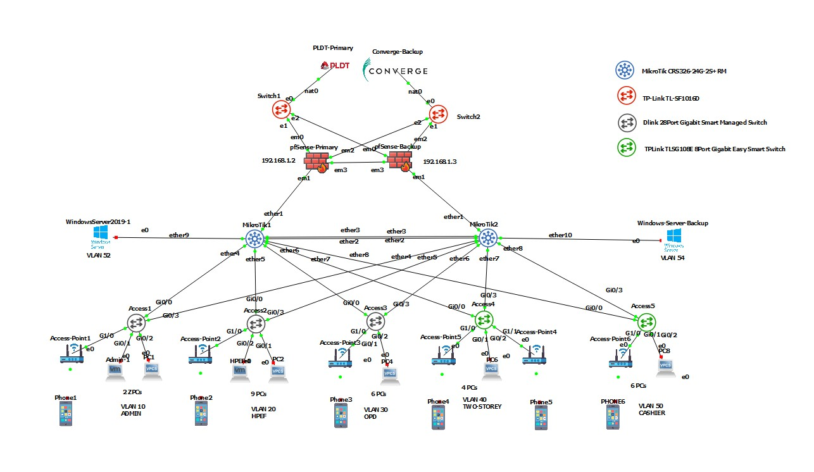

This capstone project demonstrates the design and implementation of a highly resilient enterprise network infrastructure built to maintain continuous network availability even during hardware failures or network disruptions.

This capstone project focuses on designing and implementing a resilient enterprise network infrastructure capable of maintaining continuous connectivity even during system failures, network interruptions, or hardware outages. Modern organizations depend heavily on reliable network systems to support daily operations, communication platforms, and access to critical services. Because of this, the primary goal of this project was to build a network architecture that emphasizes high availability, redundancy, and fault tolerance.
The network infrastructure was designed to simulate a real-world enterprise environment where multiple departments, servers, and network services operate simultaneously. To support these requirements, the architecture integrates several networking technologies including high availability firewalls, routing systems, switching infrastructure, and network segmentation techniques. These components work together to ensure that network traffic flows efficiently while maintaining strong security and stability across the entire system.
At the edge of the network, two pfSense firewall systems are configured in a High Availability cluster using the Common Address Redundancy Protocol (CARP). In this configuration, the firewalls share a virtual IP address that represents the gateway for internal networks. One firewall operates as the primary node (MASTER), actively processing network traffic and enforcing firewall policies. The second firewall acts as a backup node (BACKUP) that continuously synchronizes configuration settings and connection states from the primary system.
If the primary firewall becomes unavailable due to hardware failure or network disruption, the backup firewall automatically assumes the MASTER role and continues processing traffic without manual intervention. This automatic failover mechanism ensures that network security policies remain active and that connectivity to external networks is not interrupted.
To further improve network resilience, the infrastructure integrates dual Internet Service Providers (ISPs). This configuration provides internet connectivity redundancy by allowing the network to switch to an alternate ISP connection if the primary provider becomes unavailable. Through routing policies and gateway monitoring, network traffic can automatically be redirected to the secondary internet connection, ensuring uninterrupted external connectivity.
Overall, the architecture demonstrates how enterprise networks achieve high availability and operational reliability through redundancy, load distribution, and structured network design. By combining firewall failover, dual ISP connectivity, VLAN segmentation, and routing infrastructure, the system is able to maintain continuous network services even during infrastructure failures.
Two pfSense firewall systems are configured in a High Availability pair using CARP, allowing automatic failover if the primary firewall becomes unavailable.
MikroTik routers provide advanced routing capabilities including traffic management, routing policies, and integration with external internet service providers.
Two internet connections are integrated into the network to provide external connectivity redundancy. Automatic failover ensures continuous internet access during outages.
Network segmentation is implemented to separate departments and services, improving network performance and security.
Layer 3 switching enables efficient routing between VLANs and supports high-speed data transfer within the enterprise network.
Redundant infrastructure components ensure the network remains operational even if certain hardware devices or connections fail.